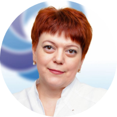
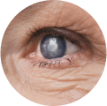

Самодиагностика и несвоевременное обращение к врачу в 100% случаев приводят к слепоте

Добро пожаловать!
На базе офтальмологического центра «Хорошее Зрение» мы открыли Центр исследования и лечения глаукомы. Почему именно исследования? Потому что такое страшное глазное заболевание как глаукома в каждом случае развивается и прогрессирует по-разному. Именно поэтому мы используем индивидуальный подход к каждому пациенту, в особенности с диагнозом «глаукома». В связи с чем, к каждому нашему пациенту с диагнозом «глаукома».
Аккумулировав весь опыт работы наших врачей и инновационное оборудование клиники, мы:
- Проводим диагностику по глаукоме на самом современном оборудовании
- Определяем тактику и методы лечения индивидуально для каждого пациента
- Проводим лазерное лечение глаукомы
Скрытая угроза

Более 1,5 миллионов человек в России больны глаукомой, а большая часть населения не знает о своем заболевании
Глаукома может протекать бессимптомно. Наиболее частая форма ‒ первичная открытоугольная глаукома, обычно не вызывающая жалоб
Стадии развития
Начальная стадия развития глаукомы характеризуется скачками и относительно стабильными периодами повышенного внутриглазного давления. Иногда возможны расширение экскавации диска зрительного нерва. Отсутствует выраженное поражение поля зрения. Возможно увеличение размеров слепого пятна и небольшие скотомы.
Развитая глаукома имеет выраженную глаукоматозную экскавацию диска зрительного нерва. Границы поля зрения сужены со стороны носа на 10% и более.
Далеко зашедшая стадия глаукомы характеризуется резким сужением полей зрения и составляет менее 15% от точки фиксации. Зачастую зрение на этой стадии сохраняется лишь на некоторых участках.
Терминальная стадия глаукомы диагностируется при полной потере предметного зрения. При этом может сохраняться светоощущение, но объекты в поле зрения неразличимы. Также терминальной стадией считается глаукома с полной слепотой.

Первая в Кузбассе
Школа глаукомы
Глаукомная школа – это то место, где наши врачи офтальмологи-глаукоматологи расскажут, что такое глаукома, какие существуют способы лечения и как наша клиника может вам помочь. К участию приглашаются не только пациенты с диагнозом «глаукома», но а также их родственники.
Также в школе вас ждет:
- Лекция о причинах развития глаукомы, ее диагностике и лечении
- Бесплатная экспресс-диагностика (специализированная при глаукоме) с расшифровкой данных
Глаукомные школы проходят во всех филиалах офтальмологического центра «Хорошее Зрение» 1 раз в месяц. Необходима предварительная запись по телефонам:
- +7 3842 779 556 (Кемерово)
- +7 38451 20 567 (Юрга)
- +7 38456 49 555 (Ленинск-Кузнецкий)
Глаукому можно
Вылечить
Медикаментозное лечение
Медикаментозная терапия считается первоначальным вариантом лечения во многих случаях впервые выявленной глаукомы и применяется на 1 стадии заболевания.
Лечение заключается в регулярном применении специальных глазных капель, которые по механизму действия могут улучшать отток или уменьшать выработку внутриглазной жидкости.
Препараты и их комбинации подбираются врачом-офтальмологом индивидуально в зависимости от формы глаукомы. Медикаментозное лечение может сочетаться с другими методами лечения.
Селективная лазерная трабекулопластика (SLT, СЛТ)
Данный метод лечения основан на лазерном воздействии на структуры глаза. СЛТ назначают в том случае, когда на фоне консервативной терапии не отмечается улучшений, а уровень внутриглазного давления, даже при регулярном использовании капель, сохраняется на высоком уровне.
Селективная лазерная трабекулопластика является бескровной и практически безболезненной процедурой, проводится амбулаторно под местной анестезией и не требует госпитализации.
SLT применяется на 1 и 2 стадиях глаукомы.
Микроимпульсное лазерное лечение на аппарате Cyclo G6
Это инновационная методика лечения глаукомы, которая позволяет приостановить развитие глаукомы без разрезов, имплантации дренажных систем и швов. Лазерное лечение глаукомы на CYCLO G6 эффективно снижает внутриглазное давление в среднем на 30% от исходных параметров. Это полностью безопасный и безболезненный метод лечения глаукомы: благодаря специальному строению зонда лазера, риски возникновения любых осложнений сведены к минимуму.
Данная методика подходит для использования как на ранних стадиях, так и в сложных случаях. При этом, лазерное лечение на CYCLO G6 проводится под местной анестезией и занимает не более 10-15 минут, а эффект сохраняется в течение 2-3 лет после проведения процедуры.
Микроимпульсное лазерное лечение на аппарате Cyclo G6 применяется на 2, 3, 4 стадиях заболевания.
Первые в Кузбассе
Врачи-глаукоматологи
Врачи офтальмологического центра «Хорошее зрение» проводят лечение глаукомы как медикаментозно, так и при помощи лазерных методик. Одно из ключевых составляющих в борьбе с глаукомой - регулярное наблюдение у лечащего врача. Лечение поможет вам улучшить общее состояние глаз и предотвратить прогрессирование болезни!
Часто задаваемые
Вопросы глаукомы
Для глаукомы характерно сужение и выпадение полей зрения. Поле зрения ‒ это то пространство, которое мы видим вокруг себя. При глаукоме повышенное внутриглазное давление приводит к атрофии зрительного нерва, а следовательно, к постепенному сужению поля зрения до полного исчезновения.
Для глаукомы характерно сужение и выпадение полей зрения. Поле зрения ‒ это то пространство, которое мы видим вокруг себя. При глаукоме повышенное внутриглазное давление приводит к атрофии зрительного нерва, а следовательно, к постепенному сужению поля зрения до полного исчезновения.
Для глаукомы характерно сужение и выпадение полей зрения. Поле зрения ‒ это то пространство, которое мы видим вокруг себя. При глаукоме повышенное внутриглазное давление приводит к атрофии зрительного нерва, а следовательно, к постепенному сужению поля зрения до полного исчезновения.
Для глаукомы характерно сужение и выпадение полей зрения. Поле зрения ‒ это то пространство, которое мы видим вокруг себя. При глаукоме повышенное внутриглазное давление приводит к атрофии зрительного нерва, а следовательно, к постепенному сужению поля зрения до полного исчезновения.
Для глаукомы характерно сужение и выпадение полей зрения. Поле зрения ‒ это то пространство, которое мы видим вокруг себя. При глаукоме повышенное внутриглазное давление приводит к атрофии зрительного нерва, а следовательно, к постепенному сужению поля зрения до полного исчезновения.